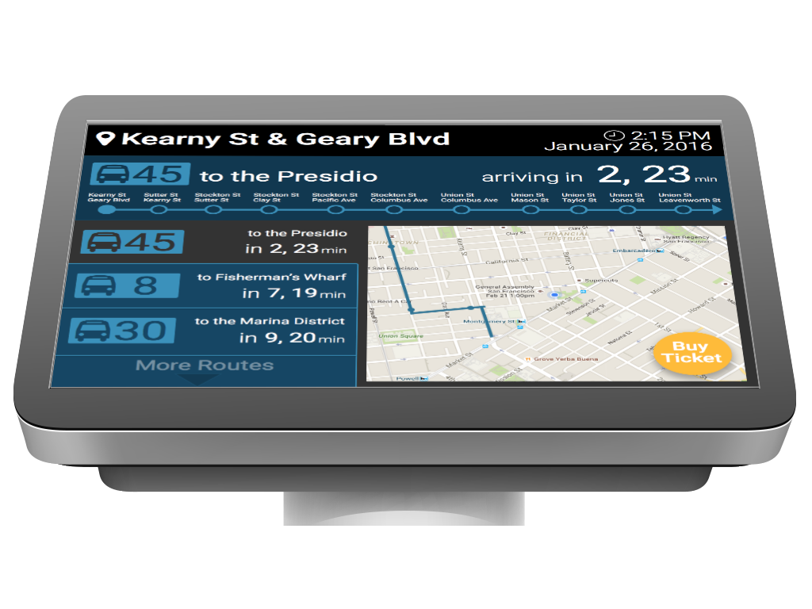

MUNI
San Francisco Public Transportation Kiosk Design
About This Project
This was a follow-on to the MUNI app design project. It was a solo class project that I worked on for two weeks after the research and initial app design.
The Problem
The goal is to increase off-peak ridership for SF Public Transit. During research we discovered that many off-peak riders were tourists and didn't want to download an app. The solution for them, and for users without a smart phone, would be a kiosk.
Process
It began with a whiteboarding session.

After feedback from users I began sketching. The first sketch incorporated all of the features I thought would be useful.

The second iteration of sketches is based on further user feedback and closely resembles the final design.

I created a couple of sized wireframes to put into mockup images with the goal of testing dimensions. I wanted to learn which features were crucial and where they should be located.

Result
This is the final hi-fi mockup. It's created using material design and would be easily scalable from iPad size up to 48". 